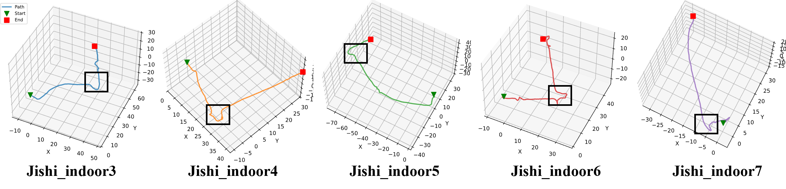

Overview
Our FillFusion-GS is a hybrid explicit-implicit LiDAR-camera fusion framework that effectively fill both inter-scan and unobserved structural voids for high-quality reconstruction. To our knowledge, this is the first cross-modal GS surface reconstruction scheme utilizing visual planar cues to compensate for LiDAR observation voids.

Overview of FillFusion-GS. The pipeline starts with processing LiDAR-visual-inertial streams to obtain trajectories via odometry. Subsequently, the geometry initialization module converts sparse LiDAR scans into dense implicit surfaces. To address unobserved voids, the Visual Planar-Guided Structure Completion (VP-GSC) module (right callout) regresses the 3D plane to fill geometric voids in the Gaussians. Finally, the Gaussian primitives are refined via the cross-modal consistency optimization scheme composed of Lrgb, Lgeo, and Lscale, ensuring both reconstruction accuracy and photorealism.
Jishi Dataset
A Challenging Real-World Dataset: We captured and released the "Jishi" dataset using a handheld device. It features flexible trajectories, large-scale indoor environments, diverse lighting conditions, and precise hardware-synchronized multi-sensor measurements.

Trajectory visualization of the Jishi dataset. Black boxes highlight regions with sharp turns and significant altitude variations. Units are in meters. The trajectories in the Jishi dataset exhibit sharp, rapid turns and significant altitude variations. Furthermore, the dataset is dominated by forward-moving trajectories, lacking the redundant scene observations found in other datasets. These characteristics pose significant challenges for scene reconstruction methods.
Results
Rendering results comparison on the Jishi(left) and INS(right)
Comparing surface reconstruction accuracy on INS and Jishi datasets.


Surface Reconstruction Comparison on MNE

Surface Reconstruction Comparison on Jishi Dataset